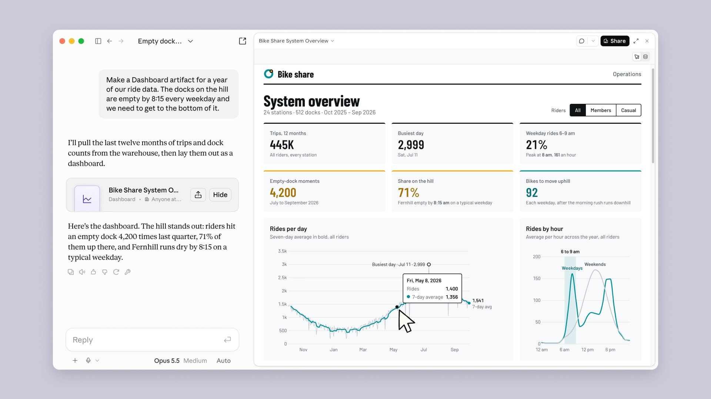
Экосистема Claude и артефакты
От ответа в чате — к вещи, которой можно пользоваться
Где живёт Claude, что такое артефакт, как попросить его так, чтобы результат можно было проверить, и чем делиться безопасно. Состояние на октябрь 2026.
⏱ 2 мин. Приветствие. В L07 была экосистема Microsoft, в L08 — анализ данных. Сегодня вторая экосистема — Claude от Anthropic, и его главная фишка: артефакты.
План: где живёт Claude → что такое артефакт → как его заказать и проверить (живое демо) → перерыв → артефакт как приложение, проекты, коннекторы, скиллы → безопасность → домашка.
Шесть рабочих вещей — по одной фразе на каждую
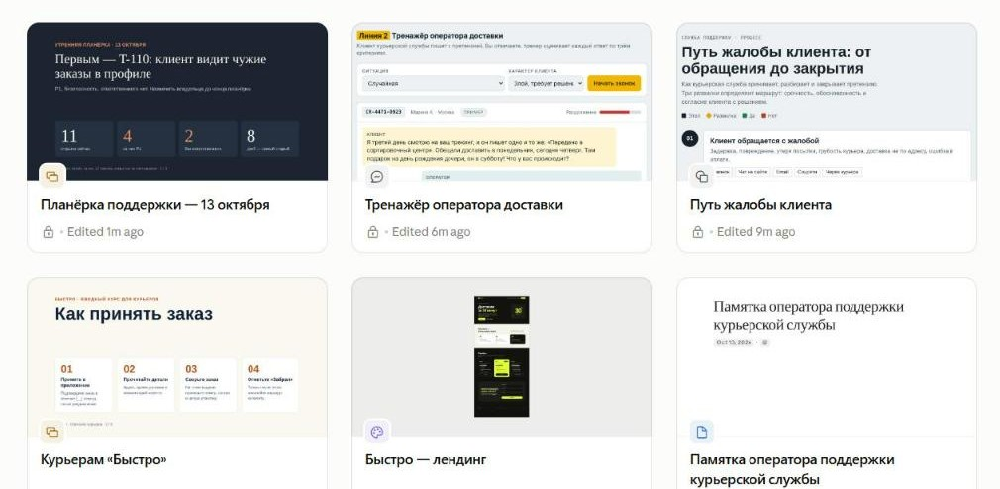
⏱ 4 мин. Покажите галерею и спросите: «Сколько времени у вас ушло бы на любую из этих вещей вручную?» Все шесть сделаны при подготовке урока, каждая — одной-двумя фразами (промпты — в demo_assets/prompts_ru.md).
Сегодня: где живёт Claude, как устроено окно, какие бывают артефакты, живое демо «таблица → дашборд → слайды», проекты и коннекторы, и чем безопасно делиться.
Шесть слов, которые понадобятся сегодня
⏱ 3 мин. Пройдитесь по каждому слову одной фразой и примером. Дальше эти слова встречаются без объяснений.
Артефакт — главный. Проект — как папка на рабочем столе, только Claude читает всё, что в ней. Память — короткие заметки о вас, их можно посмотреть и стереть. Коннектор — «ключ» к одному сервису, работает с вашими правами. Скилл — инструкция плюс файлы, которые Claude открывает, когда задача подходит. Агент — Claude, который не просто отвечает, а сам выполняет шаги: открывает файлы, сайты, собирает результат.
Где живёт Claude
⏱ 4 мин. Главная мысль: Claude — это не одно окно чата, а одна модель, к которой ведут разные «двери». Двери отличаются тем, сколько Claude делает сам.
Разговаривать: обычный чат на сайте claude.ai, в приложении для Windows/Mac и на телефоне; проекты — папка с файлами и правилами под одну тему.
Создавать вещи: артефакты — главная тема сегодня; плюс Claude прямо внутри Excel и PowerPoint.
Делать за вас: Claude сам выполняет длинные многошаговые задачи и работает в браузере — подробнее на слайде 19. Для разработчиков: Claude Code и API.
Внизу общий слой: модели одни и те же, коннекторы и скиллы подключаются везде. Аналогия с L07: у Microsoft тоже один Copilot в разных приложениях.
Главное окно: что где
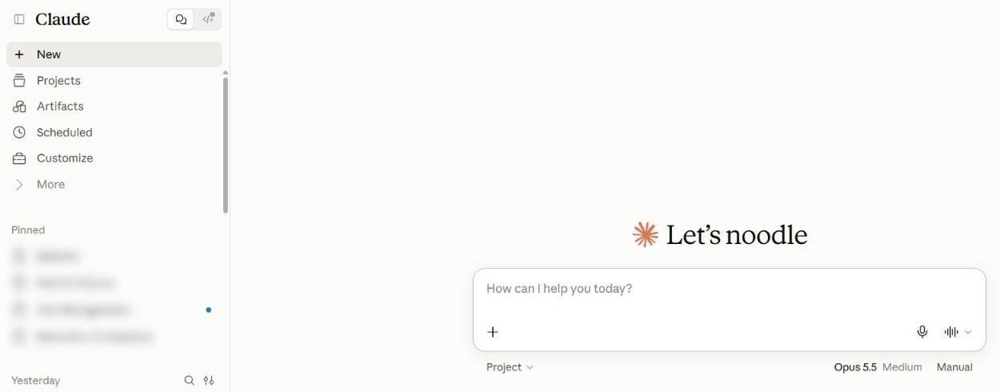
⏱ 6 мин. Тур по окну claude.ai (то же в приложении для Windows/Mac). Слева боковая панель: New — новый чат; Projects — проекты; Artifacts — все артефакты; ниже — закреплённые проекты и история чатов (на скриншоте размыта).
Вверху слева — переключатель «чат / Code»: Code — режим для программистов (слайд 19). В центре — поле ввода; «+» открывает файлы, скиллы, коннекторы, Research, память. Под полем — выбор модели (следующий слайд).
Живьём: откройте claude.ai и покажите эти 7 мест на своём экране. В Teams — делитесь окном браузера, а не всем экраном, и откройте новый чат, чтобы не светить историю.
Одно меню — четыре модели
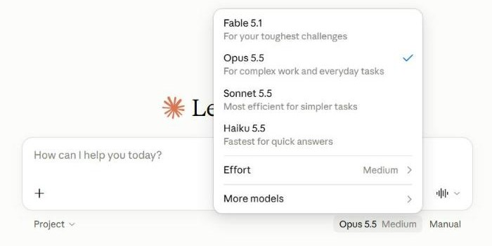
⏱ 3 мин. Меню открывается кликом по названию модели под полем ввода. Подписи в меню — официальные (в кавычках на слайде). Названия меняются несколько раз в год, принцип — нет.
Для учёбы хватает модели, которая стоит по умолчанию. Fable включают для очень сложных задач. На бесплатном плане выбор моделей меньше.
Для этого урока хватит бесплатного плана
⏱ 3 мин. Цены — с claude.com/pricing на 13.10.2026. Главное для студентов: артефакты, шаблоны Docs/Slides/Design, поиск и память есть бесплатно. Claude Code, Research, Chrome и надстройки Office — с Pro.
Лимит не в сообщениях, а в «объёме работы»: длинные файлы и мощные модели расходуют его быстрее. На платных планах есть ещё недельный лимит.
Артефакт — то, что не стыдно показать другому человеку
- Большое — обычно больше 15 строк
- Самостоятельное — понятно без чата
- Хочется править и дорабатывать
- Пригодится потом — вернётесь или покажете
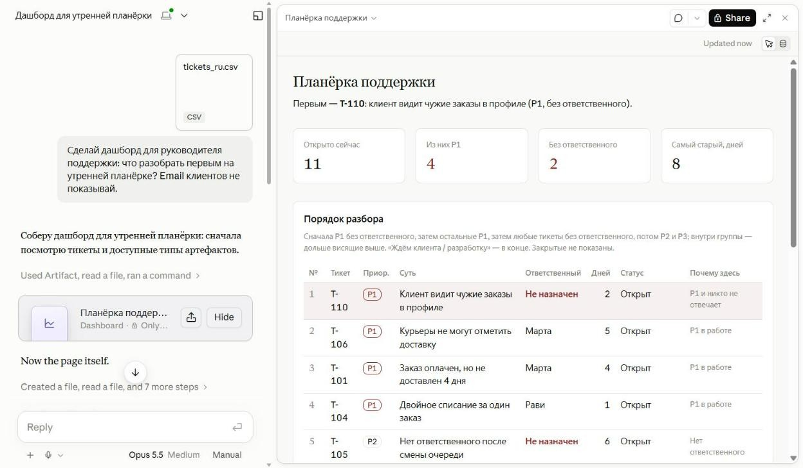
⏱ 3 мин. Определение из справки Anthropic: артефакт — всё, что Claude делает для вас и что вы бы показали кому-то: дизайн, презентацию, документ, дашборд или небольшой инструмент. Открывается рядом с разговором.
Четыре признака — когда Claude сам решает сделать артефакт. Если нужен наверняка — скажите прямо: «сделай документ / презентацию / дашборд». Важно: в настройках должно быть включено «Artifacts» (Settings → Capabilities).
Все артефакты — в одном месте
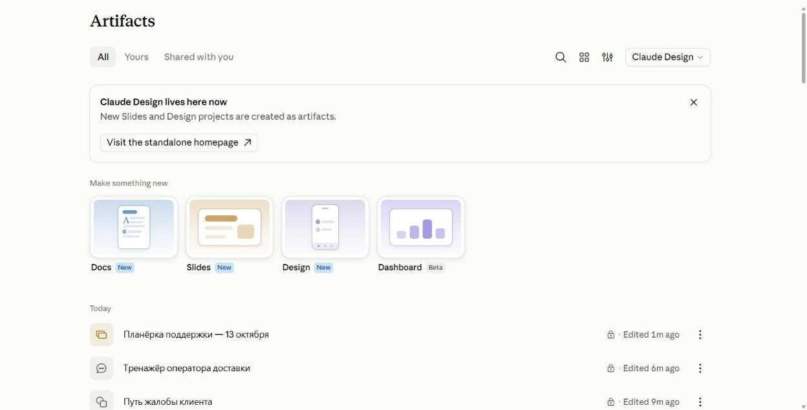
⏱ 4 мин. Вкладка Artifacts в боковой панели. Наверху — «Make something new»: начать с шаблона Docs, Slides, Design или Dashboard. Ниже — всё, что вы сделали, из любых чатов (на скриншоте — артефакты, сделанные для этого урока).
Шаблоны Docs, Slides, Design есть на всех планах, Dashboards — бета с Pro. Но шаблон не обязателен: можно просто написать в чате «сделай презентацию…» — так мы и делали.
Презентация из одной фразы
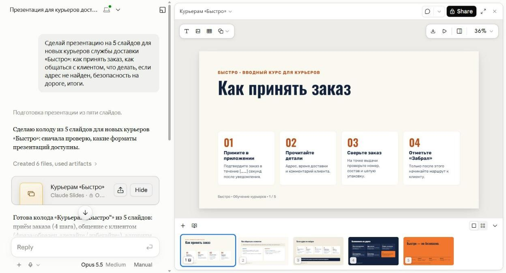
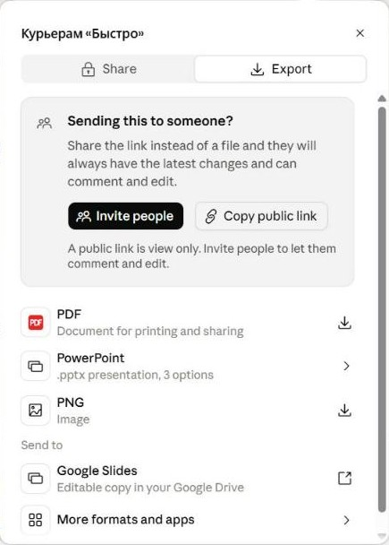
⏱ 5 мин. Живьём: новый чат → «Сделай презентацию на 5 слайдов для новых курьеров службы доставки «Быстро»: как принять заказ, как общаться с клиентом, что делать, если адрес не найден, безопасность на дороге, итоги.» Генерация — около 2 минут.
Пока Claude работает — объясните: результат открывается справа, внизу — миниатюры слайдов, наверху — инструменты. Любой текст можно исправить кликом прямо на слайде или попросить Claude: «сделай слайд 3 короче».
Share → Export: PDF, PowerPoint (.pptx), PNG, Google Slides. Совет из меню: если отправляете коллеге — лучше ссылка, у него всегда будет последняя версия.
Документ, который пишете вместе с Claude
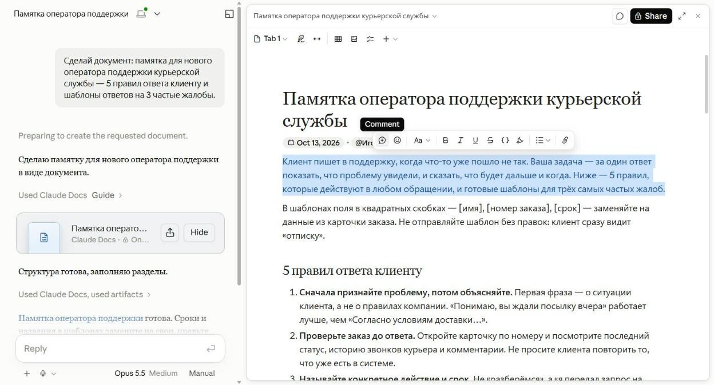
⏱ 4 мин. Промпт: «Сделай документ: памятка для нового оператора поддержки курьерской службы — 5 правил ответа клиенту и шаблоны ответов на 3 частые жалобы.» Получается живой документ (Claude Docs).
Покажите: выделите абзац — появляется панель форматирования и кнопка комментария. Документ можно редактировать руками, как обычный, или просить Claude изменить конкретное место. Коллег можно пригласить через Share — они смогут комментировать и править.
Экспорт: Word, PDF, Markdown, Google Docs.
Макет сайта — без дизайнера
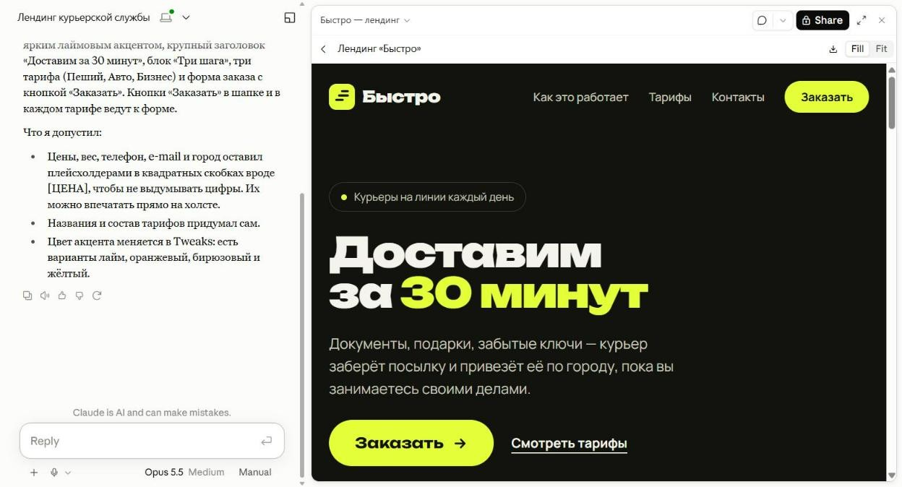
⏱ 4 мин. Design — макеты, прототипы, лендинги, одностраничники. Результат открывается на холсте: можно двигать элементы, менять цвета (Tweaks), просить правки словами.
Обратите внимание на абзац «Что я допустил»: Claude сам перечислил, что придумал (названия тарифов), а цены и телефоны оставил заглушками. Это хорошая привычка — всегда спрашивать «что ты выдумал?» и проверять.
Нарисовать процесс и показать данные
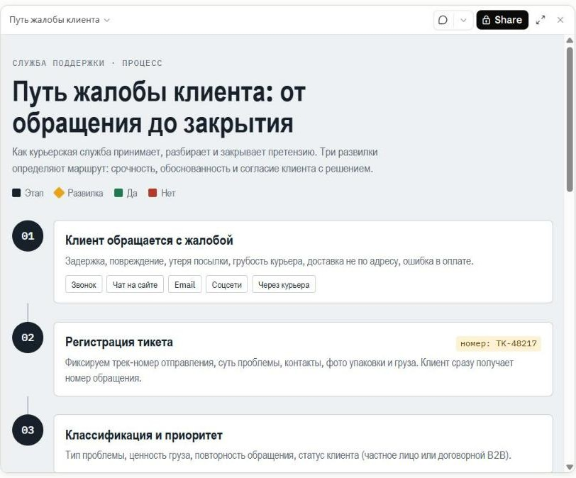
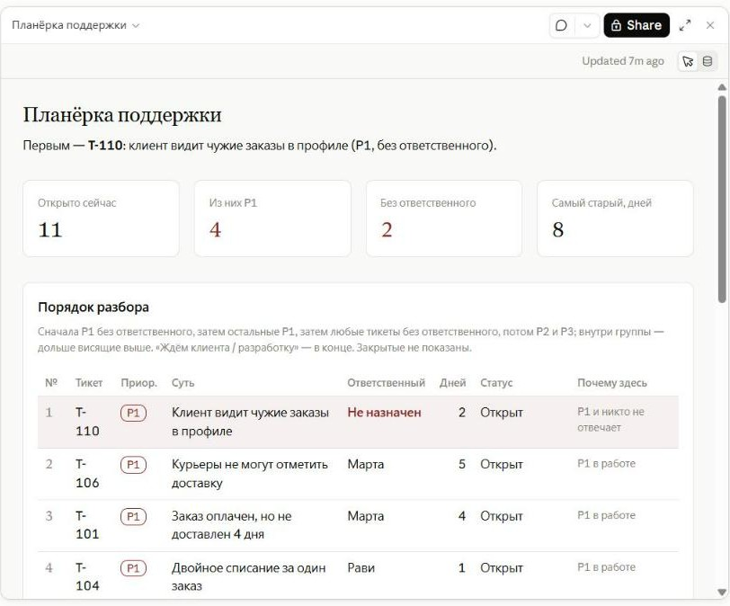
⏱ 4 мин. Схема: Claude рисует шаги процесса с развилками («срочно?», «жалоба обоснована?»). Подходит для инструкций и объяснений. Дашборд: загрузили таблицу — получили экран с цифрами и списком «что первым». Его разберём подробно в живом демо после перерыва.
Интересный момент при подготовке: для схемы Claude сначала предложил использовать подключённый Figma — и спросил разрешения (слайд 18). Мы отказались, и он нарисовал схему прямо в артефакте — на слайде результат без Figma.
Артефакт, внутри которого работает Claude
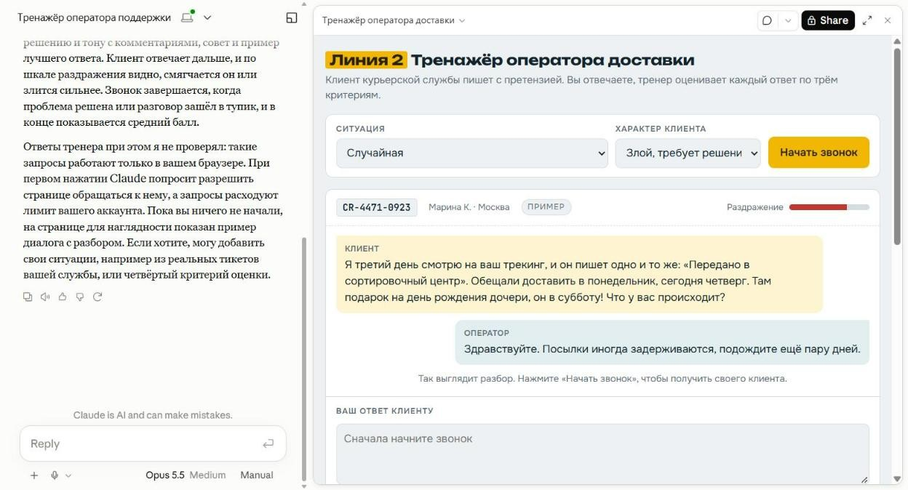
⏱ 4 мин. Мини-приложение — артефакт с кнопками и полями, который сам обращается к Claude: тренажёры, генераторы карточек, викторины. Ключ API не нужен.
Кто платит: запросы считаются в лимит того, кто пользуется приложением, а не автора. При первом запуске артефакт спрашивает разрешения. Если кнопка не работает — проверьте переключатель AI-powered artifacts в настройках (у автора курса он был выключен).
Перед занятием проверьте на бесплатном аккаунте, что такой артефакт создаётся и запускается, — от этого зависит трек Б в домашке.
5 минут
После перерыва: живое демо, проекты, коннекторы, безопасность.
⏱ 5 мин. Перерыв. Запустите таймер.
Таблица → дашборд → слайды для планёрки
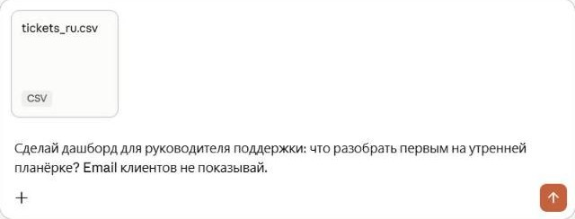
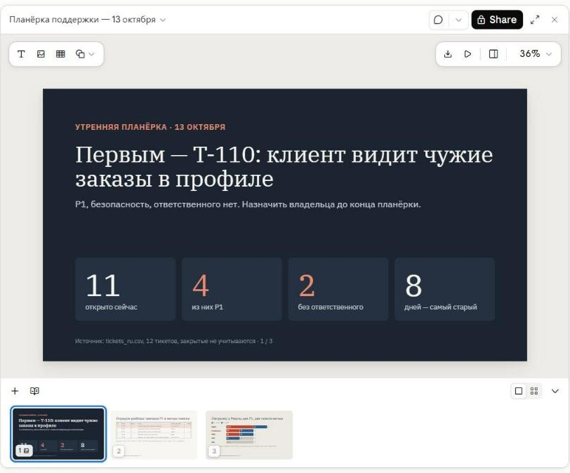
⏱ 7 мин. Живьём, файл demo_assets/tickets_ru.csv (вымышленные обращения курьерской службы; в файле специально есть email клиентов и пустые ответственные). 1) Новый чат → «+» → Add files → tickets_ru.csv. Текст: «Сделай дашборд для руководителя поддержки: что разобрать первым на утренней планёрке? Email клиентов не показывай.»
2) Через 2–3 минуты — дашборд. Проверяем вслух три вещи со слайда. На подготовке Claude сам поставил первым T-110 — P1 без ответственного, клиент видит чужие заказы. 3) В том же чате: «Сделай из этого 3 слайда для планёрки» — получаем презентацию с теми же цифрами.
Если сеть или Claude подводят — показывайте этот слайд: это реальные результаты. Никаких настоящих клиентских данных — только этот файл.
Проект — папка, которую Claude помнит в каждом чате
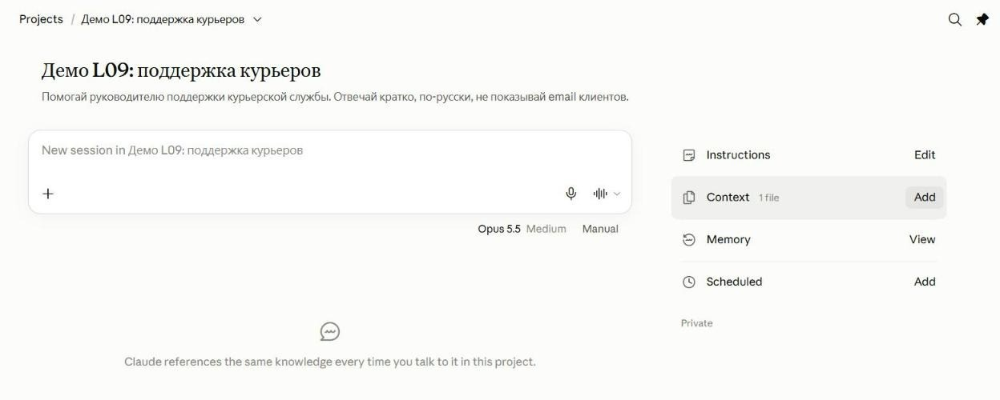
⏱ 4 мин. Projects → New project → название и цель. Справа: Instructions — правила для всех чатов проекта; Context — файлы, которые Claude читает каждый раз; Memory — что Claude запомнил в этом проекте.
Пример на слайде — демо-проект урока: инструкция «отвечай кратко, по-русски, никогда не показывай email и телефоны» и файл с обращениями. Любой новый чат в проекте уже знает и правила, и данные. В Team проектом можно поделиться с коллегами.
Claude знает только то, что вы ему дали
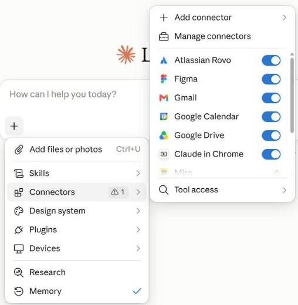
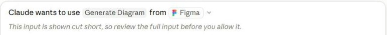
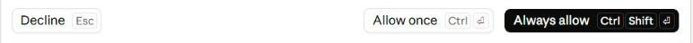
⏱ 4 мин. Три способа дать Claude информацию: прикрепить файл («+» → Add files: PDF, Excel, CSV, фото), подключить сервис (коннекторы: Gmail, Google Drive, Календарь, GitHub, Figma и сотни других) и включить поиск в интернете.
Коннектор работает с вашими правами: что не видите вы, не увидит и Claude. Перед действием в чужом сервисе Claude спрашивает — на скриншоте он хотел нарисовать схему в Figma. Если сомневаетесь — Decline или Allow once.
Когда Claude не только отвечает, но и делает сам
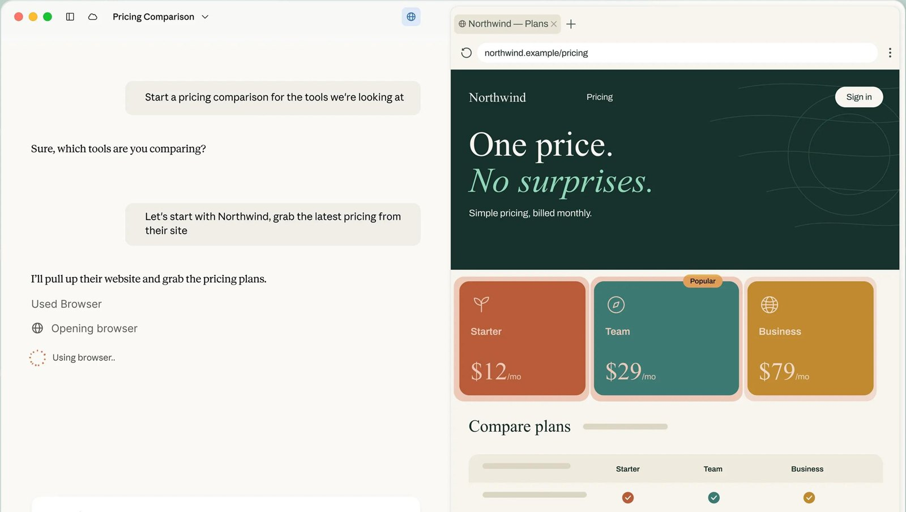
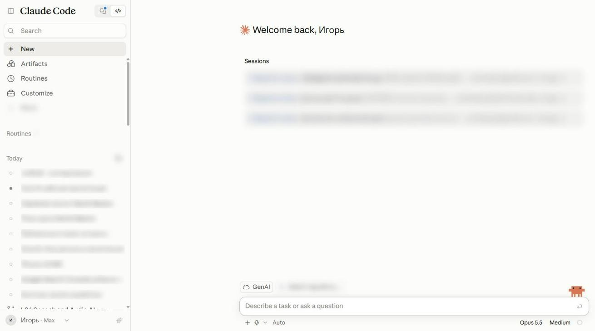
⏱ 4 мин. Короткий анонс. С 16 сентября 2026 бывший Cowork влит в обычный чат («One Claude»): Claude сам понимает, когда нужна длинная работа из многих шагов, — например, открыть сайты и собрать сравнение цен. Сначала — на Pro и Max.
Claude Code — переключатель «Code» вверху боковой панели: Claude читает проект, пишет код, запускает тесты. Эта презентация собрана в нём. Скиллы — папки с инструкцией и файлами (например, встроенные Word/Excel/PowerPoint/PDF), поэтому Claude отдаёт настоящие файлы.
Публичная ссылка — это публикация
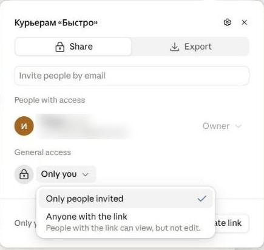
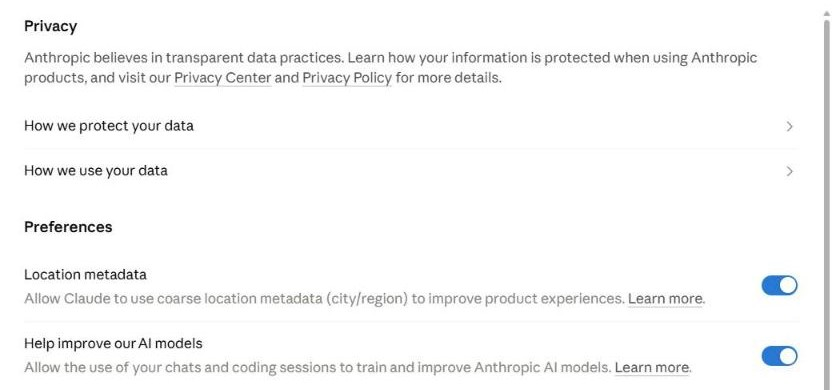
- пароли, ключи, номера карт
- личные данные клиентов и коллег
- закрытые документы компании — без разрешения
⏱ 6 мин. Share: по умолчанию «Only people invited» — только вы и приглашённые. «Anyone with the link» — ссылку можно переслать дальше, относитесь к ней как к публикации в интернете. В Team/Enterprise публичные ссылки включает администратор. На вашем плане названия пунктов могут чуть отличаться — смысл тот же: «только вы» → «любой со ссылкой».
Privacy: переключатель «Help improve our AI models». Включён — чаты и сессии кода могут использоваться для обучения моделей и хранятся до 5 лет; выключен — 30 дней. В Team и Enterprise по умолчанию на обучение не идут. Покажите, где это, — пусть каждый решит сам.
Самая частая утечка — красивый артефакт, которым хочется поделиться, пока никто не посмотрел, какие данные внутри. Поэтому в демо мы сразу попросили «email не показывай».
Сделайте две вещи разных типов
⏱ 7 мин. ДЗ: две вещи разных типов. Первая — презентация или документ. Вторая — дашборд, схема или мини-приложение по своим данным, обязательно обезличенным (замените имена, email, телефоны). Бесплатного плана хватает.
Сдаёте промпты, ссылки (только если внутри нет личных данных) или скриншоты и одну точную правку после проверки: что не понравилось → что попросили изменить. Шаблон — в L09_05_Homework.
Итоги — четыре правила. Вопросы. Мост: в L10 уходим от облачных ассистентов к открытым моделям — LM Studio, локальный запуск, RunPod.